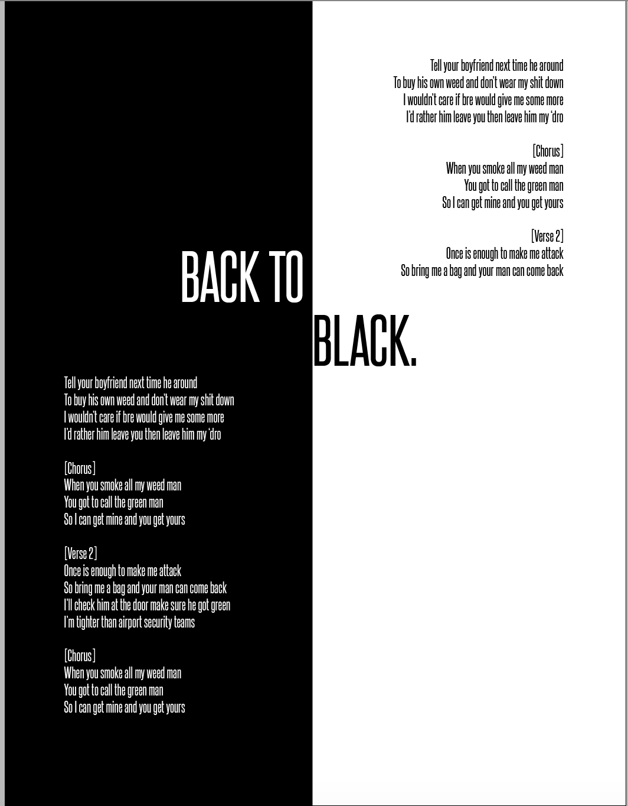
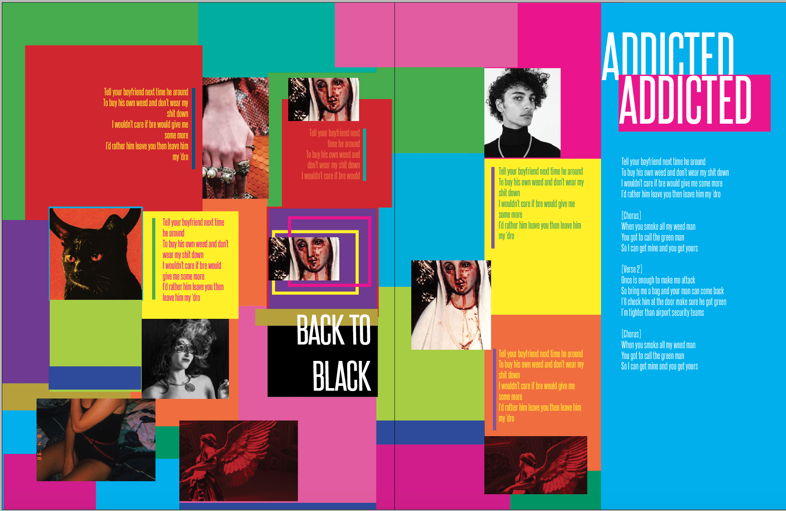
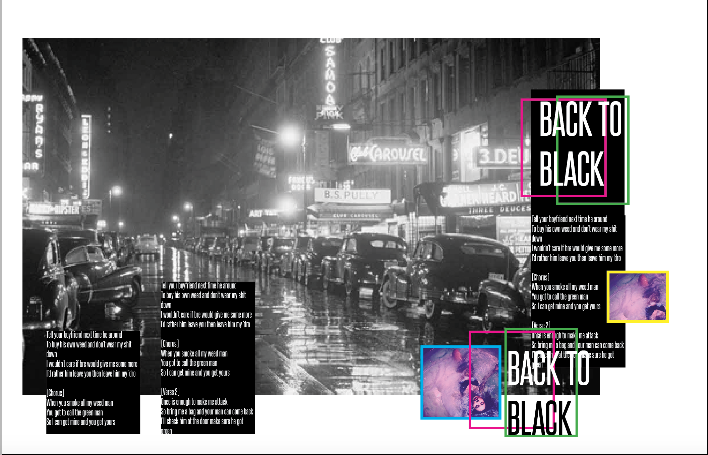
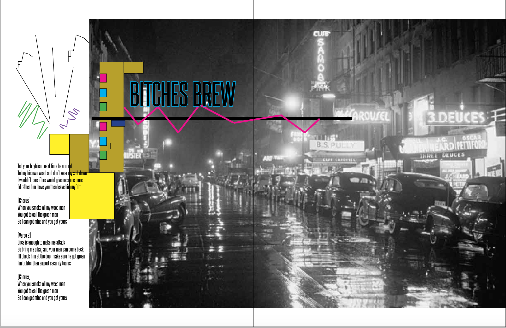
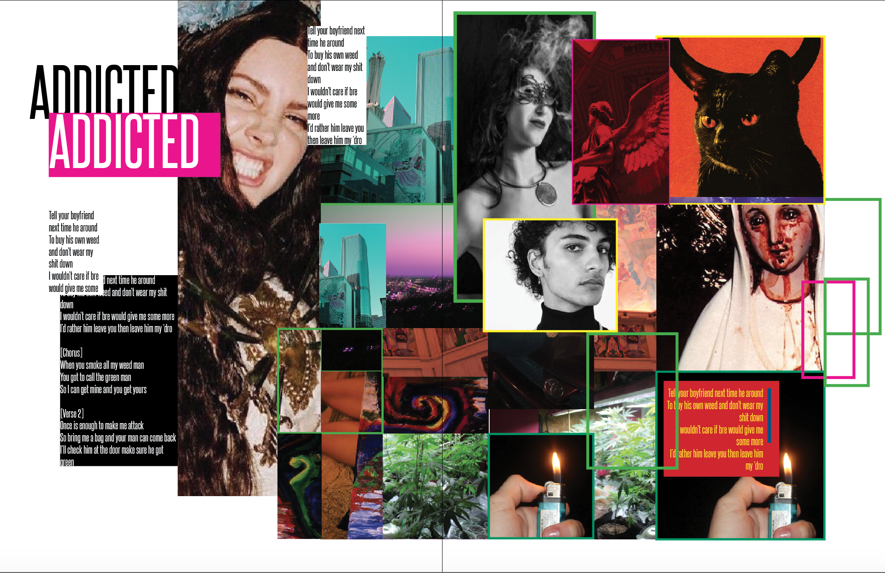

I interned for Coachella Magazine during the summer 2018, and through that internship I learned how to use InDesign to create magazine spreads. Magazine spreads influence my style of web development a lot, allowing me to be more creative. Magazine Spreads also help me plan out how I would like my website to look.
|  | SPREAD 1, PAGE 1 In a magazine, this would be the cover page or the first page that could be a table of contents, intro page, etc.... |
|  | SPREAD 2, PGS 2 & 3 This is the first spread in the magazine, that would be a collage of pictures and captions. Along with a headline and story. |
|  | SPREAD 3, PGS 4 & 5 This spread would work as a Showstopper spread along with 2 or 3 small images with captions. The showstopper has a headldine and accompanying story. |
|  | SPREAD 4, PGS 6 & 7 This is another Showstopper spread with a short story and illustrations by me. |
|  | SPREAD 5, PGS 8 & 9 This spread has a main picture along with a story, and pictures and captions. |